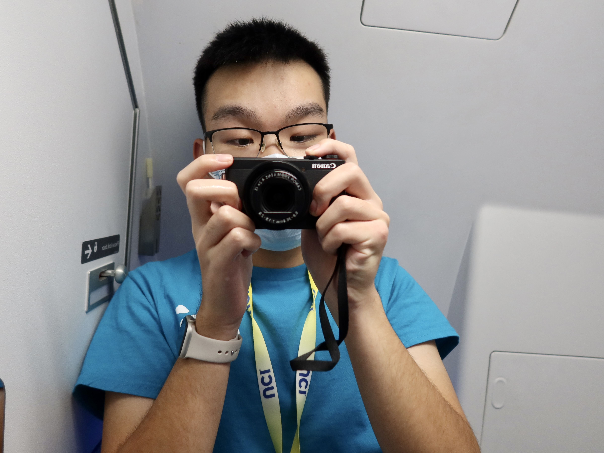

Ever since getting my first phone (an iPhone 5S) back in 2013, I've developed a passion for photography and videography. Literally capturing moments is the easiest way for me to remember events, from trans-oceanic flights to something interesting that happened in school.
I've taken pictures of several physical locations, some of which you might find on Google Maps. However, it wasn't until I started my website in July 2021 that I was able to share pictures of buses and planes to the public.

My primary camera for still photography is the Canon G7 X Mark III, which I acquired in May 2022. I also use this camera for filming some videos/portions of videos. The Canon G7 X Mark III is a pocket sized point-and-shoot camera with a 1-inch sensor, allowing it to take very good photos. It's also able to shoot 4K video at 30 frames per second.
My primary video camera is the Sony FDR-AX43. I acquired this camcorder in March 2021 after being appointed as UCI Circle K's videographer, but I also use this for my own YouTube channel (it was purchased with my own money). A more affordable variant of the Sony FDR-AX53, it's able to shoot 4K video at 30 frames per second.
My secondary camera for still photography is the Canon M200, which I acquired in October 2023. This is a basic mirrorless interchangable lens camera. I use the M200 when I'm specifically taking a trip for photography purposes. I do not use this camera to shoot video since it only shoots 4K24 with a crop.
My tertiary "camera" is the iPhone 15 Pro, which I acquired in December 2023. It takes good pictures (for a smartphone) and is able to record 4K video at 60 frames per second (albeit not as good as the AX43).
I own the following lenses, which I use with my Canon M200.